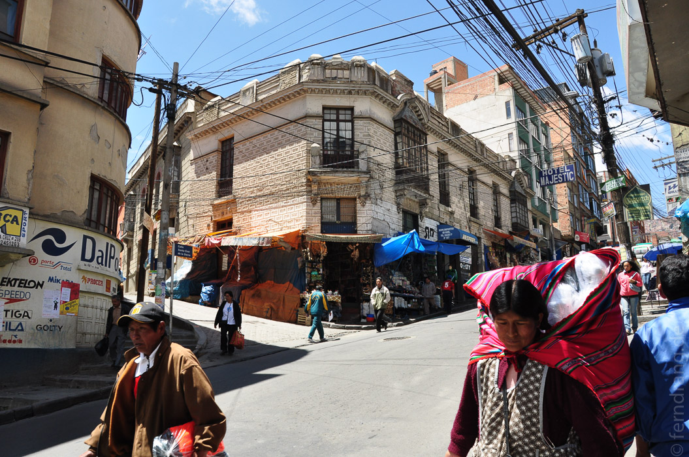
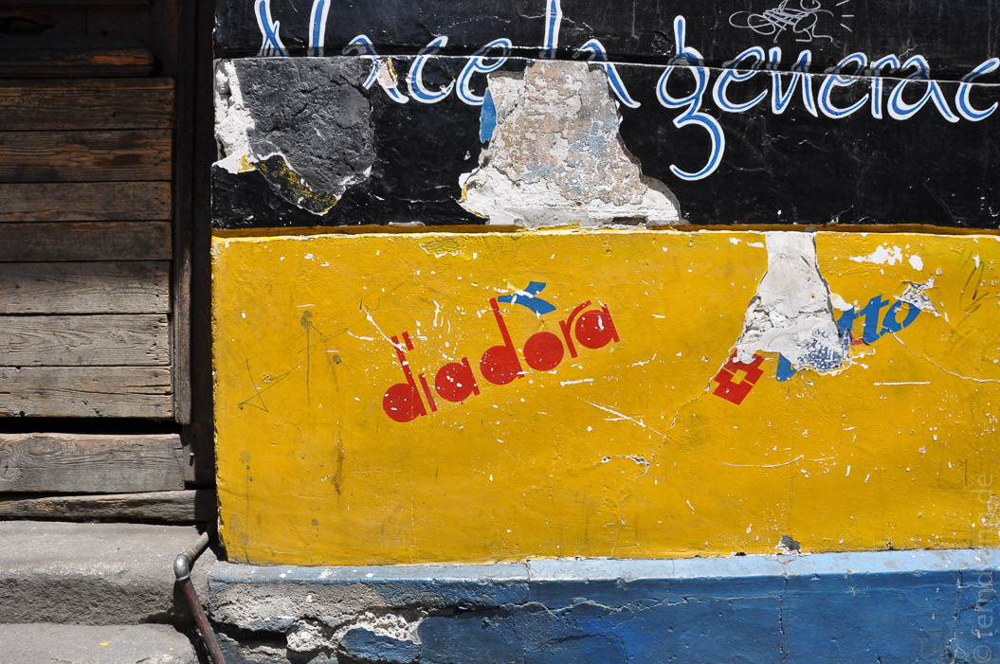
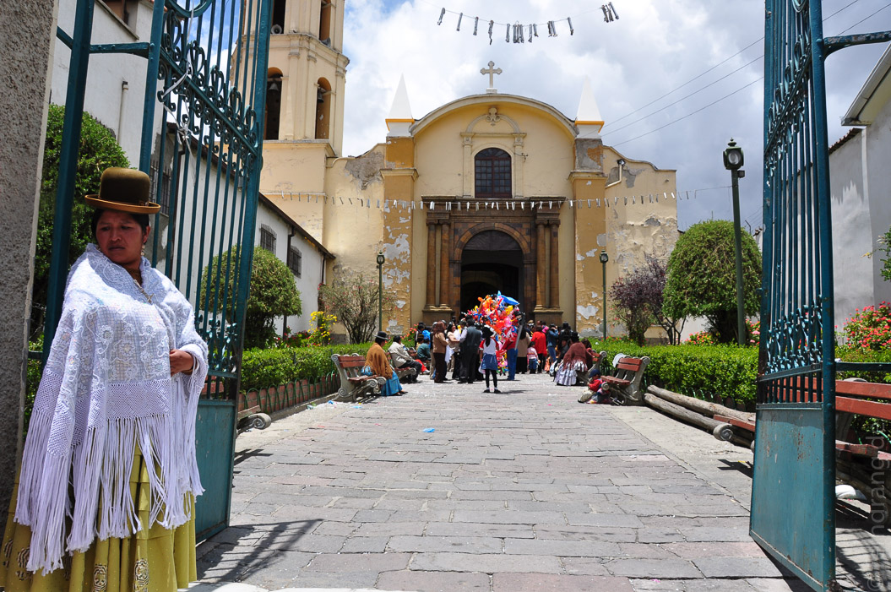
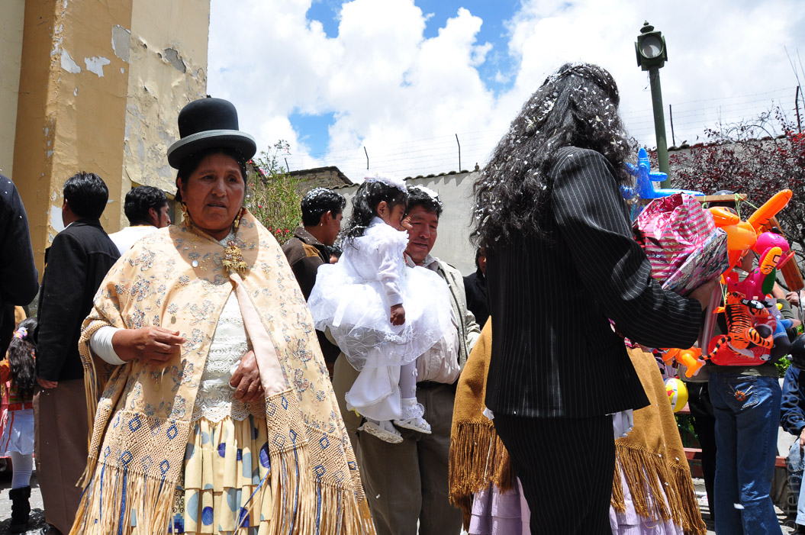
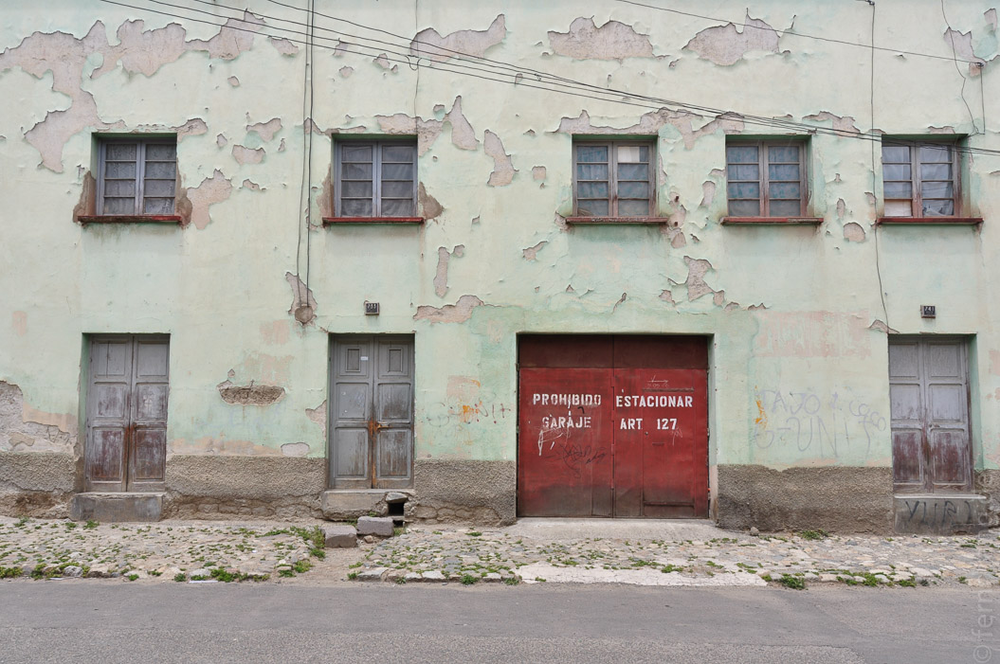
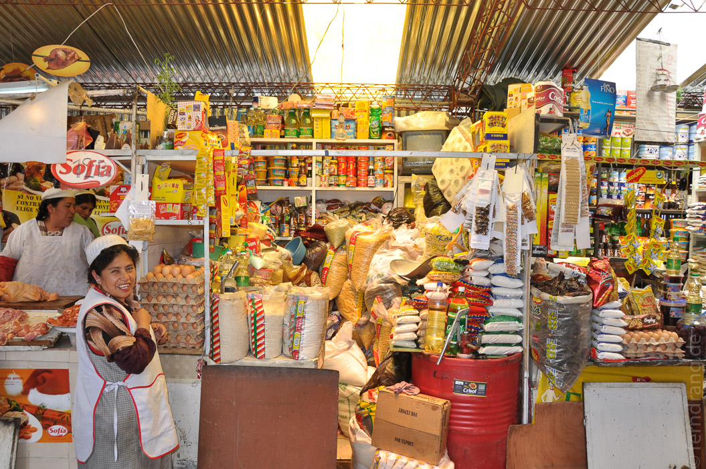
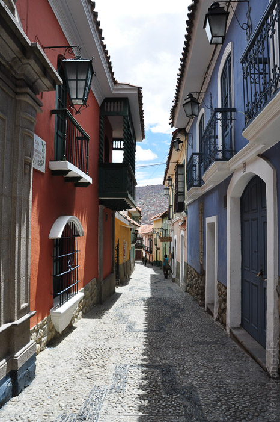

Nach einer kurzen Nacht, in der wir vermutlich wegen der Höhe (ca. 3500m) kaum zur Ruhe gekommen sind, konnten wir schon vom Fenster aus die erste bolivianische Hochzeit beobachten. Samstag scheint ein äußerst beliebter Tag dafür zu sein. Das Frühstück im Hotel war super, es gab sogar frische Brötchen. Das Hotel macht ohnehin einen sehr guten Eindruck.
Bei unserem ersten Rundgang durch die Stadt haben wir die Höhe dann richtig zu spüren bekommen. Keine Straße ist hier ebenerdig. La Paz erstreckt sich über einen großen Talkessel, an dessen Rändern sich unverputzte Häuser wie Taubenlöcher ausbreiten. Das Gelände ist so wild zerfurcht, dass es mitten in der Stadt Steilklippen gibt. Man kann um einen Block gehen und dabei nur bergauf gehen - den Stadtplan hat Escher entworfen.
Das Hotel liegt mitten im Indigena-Viertel. Die Straßen sind von kleinen Ständen gesäumt, an denen die Frauen in ihren typischen Trachten alles von Obst über Pümpel bis zu weißer Toblerone feilbieten. In den Straßen des sogenannten Hexenmarkts kann man auch seine Lust nach getrockneten Lama-Babys oder Häuten von allem, was selten ist, stillen. Wir haben es bei halbchristlichen Devotionalien belassen.
Die bunten Trachten der Frauen bestehen zuallererst aus dubiosen, quadratischen Röcken. Sie sind zwar hübsch bunt, aber für die geringe Größe der stämmigen Frauen doch sehr umfangreich. Wir haben noch nicht herausgefunden, ob der Rock die Form selbst erzeugt. Der Oberkörper wird mit bunten Decken umwickelt. Den Abschluss macht ein hoher, runder Hut, der kokett auf dem Kopf getragen wird, und dabei so hoch sitzt, dass es keinem Schutzzweck dienen kann. Die Männer haben eine ausgeprägte Liebe zu Trainingsanzügen entwickelt.
Weite Teile der Stadt sind gleichzeitig verfallen und belebt. Viele Häuser stammen noch aus älteren Zeiten und sind mit allem erdenklichen Zierrat versehen, der langsam verwittert. Die neueren Gebäude entbehren meistens auch noch dem Charme des Verfalls und sind einfach nur unansehnlich.
Um der Höhe etwas entgegenzusetzen, halten wir es wie die Einheimischen und trinken Unmengen Koka-Tee. Schwer zu sagen, ob es wirkt. Bei zwei älteren Herren im Cafe hat hingegen Selbstgebrannter so gut gewirkt, dass sie uns einen traditionellen Tanz vorgeführt haben.
Glücklicherweise hat sich das Wetter als viel besser herausgestellt, als erwartet. Es ist so sonnig, dass ich die Farbe in ungünstige Richtung gewechselt habe. Der Regen kommt aus heiterem Himmel, ist aber schnell wieder vorbei.
Nach einem ganzen Tag Lauferei sind wir schon am frühen Abend ins Bett gefallen und haben stolze zwölf Stunden geschlafen. Am Sonntag wurde komischerweise nicht geheiratet. Die Märkte waren zwar immer noch voll, aber die meisten Läden hatten geschlossen. Dadurch bekam die Stadt etwas trostloses. Inbesondere der Prado, die Prachtmeile von La Paz mit vielen Geschäften, hatte nichts zu bieten.
Heute Abend werden wir uns nach Süden in Richtung Uyuni aufmachen. Wir freuen uns schon auf zwölf Stunden Nachtbus statt Hotel. Ab morgen sind wir auf einer dreitägigen Tour durch den Salar de Uyuni, eine gigantische Salzwüste im Hochland. Es wird noch höher und viel kälter, aber für die grandiose Landschaft, die uns erwartet, ist das kein schlechter Preis.






